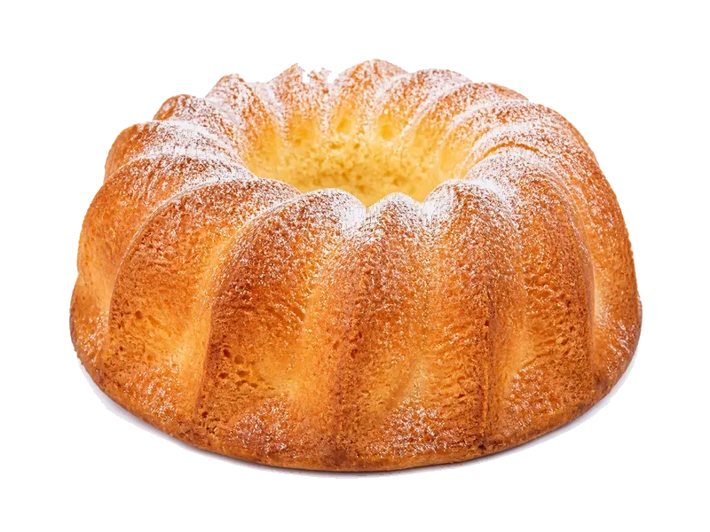

Słodycze i przekąski
Babka drożdżowa
Babka drożdżowa: 7 g białka, 340 kcal, 52 g węglowodanów i 12 g tłuszczu na 100 g. Kategoria: Słodycze i przekąski.
Kalorie340 kcalna 100 g
Białko / proteiny7 g
Węglowodany52 g
Tłuszcz12 g
Cena (szac.)~3,82 złza 100 g
Ceny zaktualizowano: maj 2026 (szacunek — ceny w popularnych supermarketach)
Porcja: kromka (60g)
| Kalorie | 204 kcal |
|---|---|
| Białko | 4.2 g |
| Węglowodany | 31.2 g |
| Tłuszcz | 7.2 g |
| Cena (szac.) | ~2,29 zł |
Szczegółowe składniki odżywcze na 100 g
| Wartość energetyczna (kalorie) | 340 kcal |
|---|---|
| Białko (proteiny) | 7 g |
| Węglowodany | 52 g |
| Tłuszcz | 12 g |
| Tłuszcze nasycone | 5 g |
| Tłuszcze nienasycone | 7 g |
| Witaminy i minerały (skrót) | Miedź, Mangan, Fosfor |
| Współczynnik kcal / 1 g białka | 48.6 |
| Cena produktu (szac. za 100 g) | ~3,82 zł |
| Cena za 100 g białka (szac.) | ~54,52 zł |
Witaminy i minerały na 100 g
Ilość w 100 g produktu oraz orientacyjny % dziennego zapotrzebowania (RDA) dla dorosłej osoby. Żelazo wg normy dla kobiet; sód jako % limitu. Wartości typowe (USDA / tabele żywieniowe / etykiety) — mogą się różnić między markami.
-
Witamina B2 (ryboflawina) 0.1 mg
-
Wapń 50 mg
-
Żelazo 1.2 mg
-
Magnez 25 mg
-
Fosfor 60 mg
-
Potas 120 mg
-
Cynk 0.5 mg
-
Selen 2 µg
-
Miedź 200 µg
-
Mangan 0.3 mg
-
Sód 80 mg